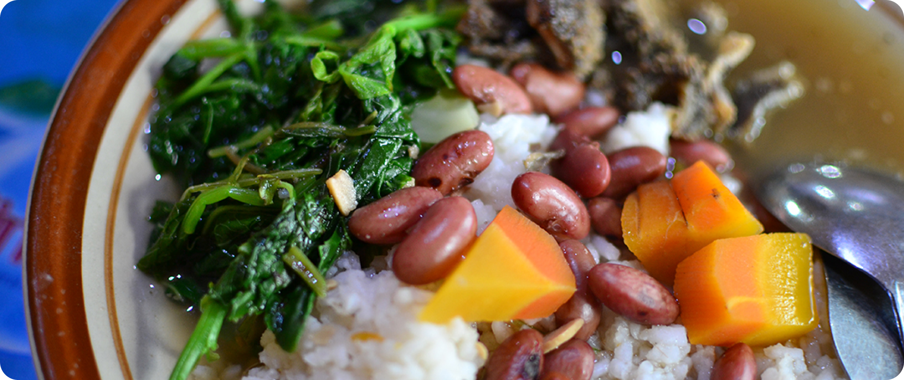
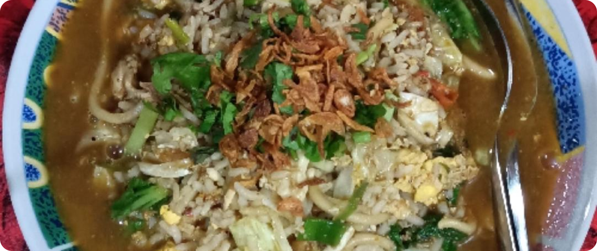

Getuk Gondhok
Getuk Gondhok is one of the traditional snacks from Magelang. Getuk is made from cassava. Unlike other getuks, getuk gondok is layered with a softer color. Usually in one getuk package, there are layered getuks, several colored getuks, and extras such as klepon. In addition, there is grated coconut to add a savory taste.
Kupat Tahu
Kupat Tahu is one of the legendary foods in Magelang. The basic ingredients of this dish are ketupat and tofu. For other ingredients are sprouts and bakwan or other fried foods. The seasoning for this dish is peanut sauce with soy sauce and chili. You can find this food in almost all areas in Magelang and its surroundings.
Besides getuk, cassava is also the basic ingredient for making slondok snacks. The taste of this snack is savory and spicy. In addition, there are also sweet ones.
Sop senerek is a food whose main ingredient is red beans. In addition, other ingredients are beef or chicken, vegetables and savory meat broth.
The hallmark of fried rice in Magelang is the use of large and thick noodles. In addition, the way to cook it still uses charcoal.
